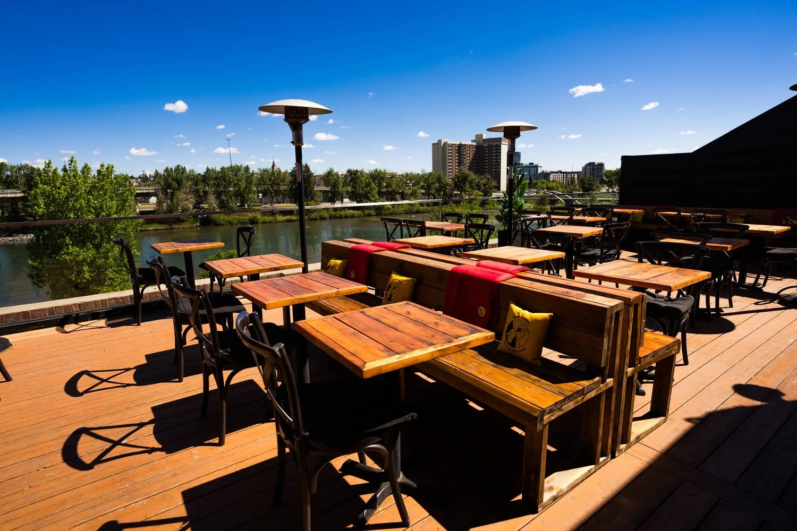

CONNIE & JOHN’S ROOFTOP PATIO
Connie & John’s
rooftop patio.
Pizza, a view, and a different way to spend an afternoon by the Bow.

CLOSED FOR THE SEASON
A view
worth the wait.
Connie & John’s rooftop patio is seasonal and is currently closed. It’s a separate experience from the charbar dining room downstairs, with pizza and views over the river.
For now, the fire’s on downstairs. Join us at charbar for lunch, dinner, happy hour or weekend brunch.
Reserve in the dining room See the charbar menus
The same address.
A different point of view.
CONNIE & JOHN’S PIZZA
Still firing
downstairs.
The rooftop takes a winter break. Pizza pickup at the Simmons Building is available year-round. Choose the East Village location when ordering.
Order pizza for pickup ↗This opens Connie & John’s ordering service. It is not a rooftop table reservation.
Enquire about a future rooftop event